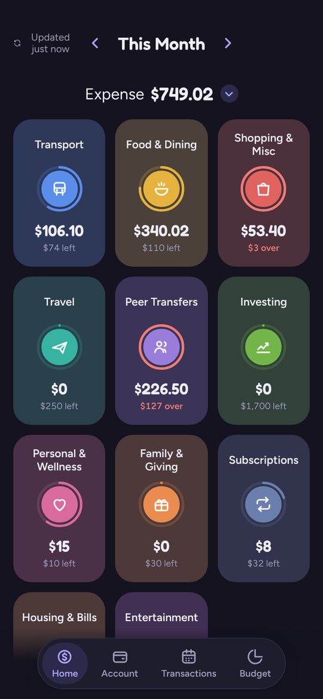
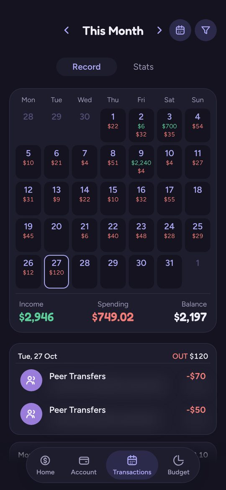
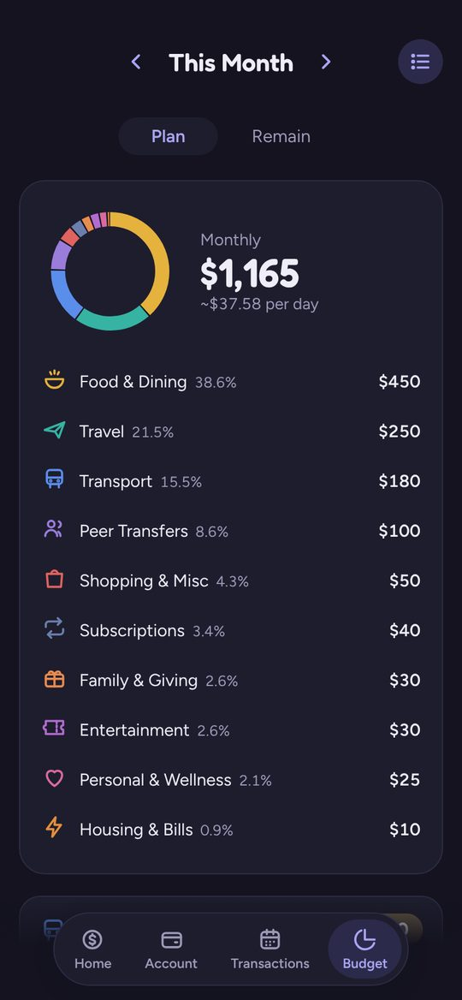
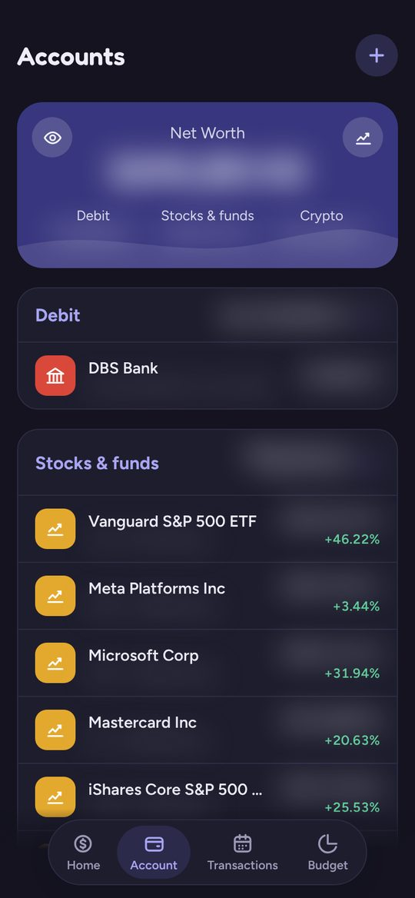

Projects
Things I've built, mostly around data, machine learning and AI.
-
Fin Track: Personal Financial Tracker
A personal financial tracker that logs my spending automatically. I built it because expense apps that rely on manual entry never stuck. After about a month I'd stop logging, and the transactions I forgot slipped through. Now, whenever I pay by card, PayNow or PayLah!, my bank sends a payment notification. A Power Automate flow picks it up, parses the date, amount and merchant, and adds the transaction to my Google Sheet.
On top of the sheet is a mobile-friendly app that reads and writes through the Google Sheets API, so the sheet stays the single source of truth. It groups spending into category cards with budget rings, shows daily income and expenses on a calendar, keeps a month-by-month budget history, and tracks balances and investments with live USD/SGD conversion. Possible duplicate transactions are flagged automatically. I built the app with Claude, then set up the same flow and repackaged the app as a Google Apps Script web app so my girlfriend could use it with her own data.

Spending by category 
Daily calendar 
Monthly budget 
Accounts (amounts hidden) -
Second Brain: AI Assistant on Telegram
A personal knowledge base in Obsidian, organised into Health, School, Work, Finance, Social and Projects, connected to an LLM agent I chat with on Telegram. It runs 24/7 on my PC as a Python service in WSL Ubuntu, built on the open-source obsidian-agent. On top of it, I wrote tools that read the task checklists in my project notes and reply with a progress bar chart. I also locked the bot so it only responds to my Telegram account.
-
Retail Analytics & Customer Intelligence Engine
An end-to-end CRISP-DM analysis of 248k+ transaction records to improve inventory restocking, customer targeting and cross-selling. Association rule mining (lift 12.7, confidence 78.1%) surfaced products that are often bought together, which shaped automated bundling ideas. K-Means clustering grouped customers by what they buy, for personalised marketing.
-
Stock Price Predictor
A sentiment analysis model built end to end: preprocessing, tokenisation, embeddings and fine-tuning, plus exploratory analysis of how accurate the model was.
-
This website
Plain HTML and CSS, hosted for free on GitHub Pages.